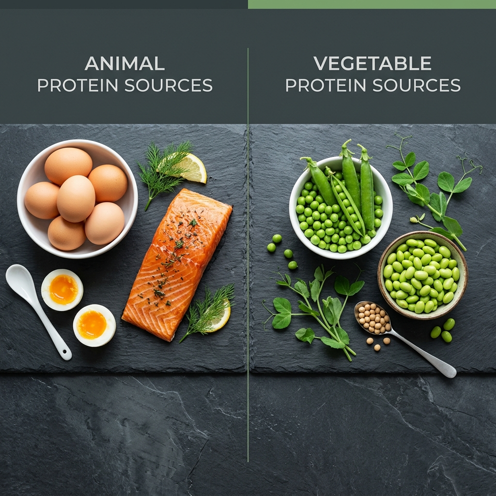

Proteinkvalitet: Animaliskt vs Vegetabiliskt

Inte allt protein är- eller skapas-lika. Det handlar inte bara om hur många gram du får i dig, utan om vilket protein och hur väl kroppen faktiskt kan använda det. Det är här begreppet proteinkvalitet kommer in.
Aminosyror – de verkliga byggblocken
Proteiner är långa kedjor av aminosyror. Det finns 20 olika aminosyror, och kroppen kan tillverka 11 av dem själv (dessa kallas "icke-essentiella"). De återstående 9 måste du få i dig via maten – dessa är de essentiella aminosyrorna (EAA). Bland dem är leucin, isoleucin och valin (grenade aminosyror, BCAA) särskilt viktiga för muskeluppbyggnad.
Vad menas med ett "fullvärdigt" protein?
Ett fullvärdigt protein innehåller alla 9 essentiella aminosyror i tillräckliga mängder. Animaliska proteinkällor – kött, fisk, ägg, mejeriprodukter – är nästan alltid fullvärdiga. Det är en av de viktigaste anledningarna till att de rangordnas högt i protein-per-krona-sammanhang.
Vegetabiliskt protein – inte sämre, men annorlunda
De flesta växtbaserade proteinkällor är inte fullvärdiga på egen hand. Soja är ett undantag och är faktiskt fullvärdigt. Andra bönor saknar ofta metionin, medan spannmål (som ris) saknar lysin.
Det traditionella rådet att "kombinera bönor och ris" i samma måltid är ett smart sätt att komplettera aminosyraprofilen – men forskning tyder på att du inte behöver göra det i exakt samma måltid. Kroppen har en liten pool av aminosyror och klarar av att vänta några timmar på kompletteringen.
PDCAAS och DIAAS – proteinkvalitetspoäng
Livsmedelsvetare använder standardiserade mått för att jämföra proteinkvalitet:
- PDCAAS (Protein Digestibility-Corrected Amino Acid Score): Max 1,0. Ägg och vassle: 1,0. Soja: 0,91. Bönor: 0,70. Vete: 0,42.
- DIAAS (Digestible Indispensable Amino Acid Score): Nyare och mer exakt. Vassle: 1,25. Ägg: 1,13. Ärta: 0,82.
Det praktiska takeawayet: om du äter animaliskt protein av god kvalitet behöver du inte oroa dig för aminosyraprofilen. Äter du primärt växtbaserat, kombinera varierat och ät lite mer totalt protein för att kompensera för lägre upptagbarhet.
Vad betyder detta för PPK-kalkylatorn?
PPK-kalkylatorn räknar gram protein per krona oavsett källa. En produkt med högt PPK men låg proteinkvalitet (t.ex. gelatinbaserade produkter) är inte nödvändigtvis ett bra köp för muskelbygge. Satsa på animaliska källor med högt PPK, eller vegetabiliska med soja/ärtprotein som bas, så maximerar du värdet av varje krona.